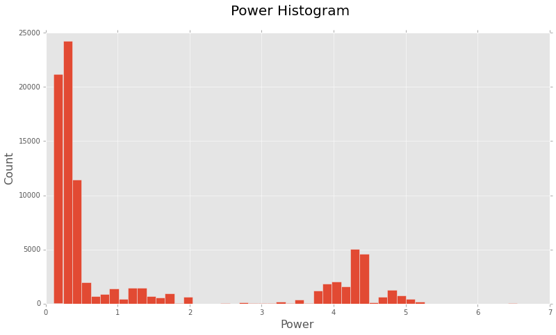
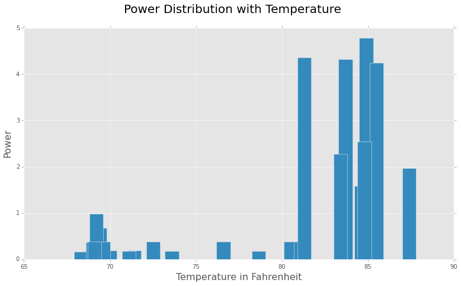

In this post, we are going to analyze electricity consumption data from a house. We have a time-series dataset which contains the power(kWh), Cost of electricity and Voltage at a particular time stamp. We are further provided with the temperature records during the same day for each hour. You can download the compressed dataset from here. I’d further recommend you to have a look at the corresponding ipython notebook.
First part is the Data Analysis Part where we will be doing the basic data cleaning and analysis regarding the power demand and cost incurred. The second part employs a KMeans clustering approach to identify which appliance might be the major cause for the power demand in a particular hour of the day.
So let’s start with basic imports and reading of data from the given dataset.
1
2
3
4
5
6
7
8
9
10
11
12
13
14
15
16
import numpy as np
import pandas as pd
import matplotlib.pyplot as plt
# Read the sensor dataset into pandas dataframe
sensor_data = pd.read_csv('merged-sensor-files.csv',
names=["MTU", "Time", "Power",
"Cost", "Voltage"], header = False)
# Read the weather data in pandas series object
weather_data = pd.read_json('weather.json', typ ='series')
# A quick look at the datasets
sensor_data.head(5)
| MTU | Time | Power | Cost | Voltage | |
|---|---|---|---|---|---|
| 0 | MTU1 | 05/11/2015 19:59:06 | 4.102 | 0.62 | 122.4 |
| 1 | MTU1 | 05/11/2015 19:59:05 | 4.089 | 0.62 | 122.3 |
| 2 | MTU1 | 05/11/2015 19:59:04 | 4.089 | 0.62 | 122.3 |
| 3 | MTU1 | 05/11/2015 19:59:06 | 4.089 | 0.62 | 122.3 |
| 4 | MTU1 | 05/11/2015 19:59:04 | 4.097 | 0.62 | 122.4 |
Let’s have a quick look at the weather dataset as well:
weather_data
2015-05-12 00:00:00 75.4 2015-05-12 01:00:00 73.2 2015-05-12 02:00:00 72.1 2015-05-12 03:00:00 71.0 2015-05-12 04:00:00 70.7 . . dtype: float64
TASK 1: Data Analysis
Data Cleaning/Munging:
After having a look at the merged-sensor-files.csv I found out there are some inconsistent rows where header names are repeated and as a result ‘pandas’ is converting all these columns to ‘object’ type. This is quite a common problem, which arises while merging multiple csv files into a single file.
sensor_data.dtypes
MTU object Time object Power object Cost object Voltage object dtype: object
Let’s find out and remove these inconsistent rows so that all the columns can be converted to appropriate data types.
The code below finds all the rows where “Power” column has a string value - “Power” and get the index of these rows.
1
2
3
# Get the inconsistent rows indexes
faulty_row_idx = sensor_data[sensor_data["Power"] == " Power"].index.tolist()
faulty_row_idx
[3784, 7582, 11385, . . 81617, 85327]
and now we can drop these rows from the dataframe
1
2
3
4
5
# Drop these rows from sensor_data dataframe
sensor_data.drop(faulty_row_idx, inplace=True)
# This should return an empty list now
sensor_data[sensor_data["Power"] == " Power"].index.tolist()
[]
We have cleaned up the sensor_data and now all the columns can be converted to more appropriate data types.
1
2
3
4
5
6
7
8
9
10
# Type Conversion
sensor_data[["Power", "Cost", "Voltage"]] = sensor_data[["Power",
"Cost", "Voltage"]].astype(float)
sensor_data[["Time"]] = pd.to_datetime(sensor_data["Time"])
# Also add an 'Hour' column in sensor_data
sensor_data['Hour'] = pd.DatetimeIndex(sensor_data["Time"]).hour
sensor_data.dtypes
MTU object Time datetime64[ns] Power float64 Cost float64 Voltage float64 Hour int32 dtype: object
This is better now. We have got clearly defined datatypes of different columns now. Next step is to convert the weather_data Series to a dataframe so that we can work with it with more ease.
1
2
3
4
5
6
7
8
9
10
11
12
# Create a dataframe out of weather dataset as well
temperature_data = weather_data.to_frame()
# Reindex it so as to create a two column dataframe
temperature_data.reset_index(level=0, inplace=True)
temperature_data.columns = ["Time", "Temperature"]
# Add the "Hour" column in temperature_data
temperature_data["Hour"] = pd.DatetimeIndex(
temperature_data["Time"]).hour
temperature_data.dtypes
Time datetime64[ns] Temperature float64 Hour int32 dtype: object
Since now we have both of our dataframes in place, it'd be a good point to have a look at sum of the basic statistics of both of these data frames.
1
sensor_data.describe()
| Power | Cost | Voltage | Hour | |
|---|---|---|---|---|
| count | 88891.000000 | 88891.000000 | 88891.000000 | 88891.000000 |
| mean | 1.315980 | 0.202427 | 123.127744 | 11.531865 |
| std | 1.682181 | 0.252357 | 0.838768 | 6.921671 |
| min | 0.113000 | 0.020000 | 121.000000 | 0.000000 |
| 25% | 0.255000 | 0.040000 | 122.600000 | 6.000000 |
| 50% | 0.367000 | 0.060000 | 123.100000 | 12.000000 |
| 75% | 1.765000 | 0.270000 | 123.700000 | 18.000000 |
| max | 6.547000 | 0.990000 | 125.600000 | 23.000000 |
1
temperature_data.describe()
| Temperature | Hour | |
|---|---|---|
| count | 25.000000 | 25.00000 |
| mean | 76.272000 | 11.04000 |
| std | 6.635355 | 7.29429 |
| min | 67.900000 | 0.00000 |
| 25% | 69.600000 | 5.00000 |
| 50% | 75.400000 | 11.00000 |
| 75% | 83.000000 | 17.00000 |
| max | 87.000000 | 23.00000 |
As apparent from above statistics there is a good amount of variation in Power and corresponding Cost values in sensor_data dataframe, where average power is 1.315980kW and minimum and maximum power used throughout the day is 0.11kW and 6.54kW respectively. Similarily there is an apparent variation in temperature in temperature_data dataset, most probably it attributes to day and night time.
To get a better understanding of these variations we’ll be plotting power and temperatures with the timestamps, so as to find out the peak times for both.
But before moving to visualizations we’ll have to create respective grouped datasets from sensor_data and temperature_data, grouping by the “Hour” column. This way we can work on hourly basis.
1
2
3
4
# Group sensor_data by 'Hour' Column
grouped_sensor_data = sensor_data.groupby(
["Hour"], as_index = False).mean()
grouped_sensor_data
| Hour | Power | Cost | Voltage | |
|---|---|---|---|---|
| 0 | 0 | 0.173790 | 0.029468 | 124.723879 |
| 1 | 1 | 0.179594 | 0.033805 | 124.522469 |
| 2 | 2 | 0.185763 | 0.037013 | 123.929979 |
| . | . | . | . | . |
| 22 | 22 | 2.542672 | 0.387109 | 123.542620 |
| 23 | 23 | 2.269941 | 0.346457 | 123.415791 |
1
2
3
4
# Group temperature_data by "Hour"
grouped_temperature_data = temperature_data.groupby(
["Hour"], as_index = False).mean()
grouped_temperature_data
| Hour | Temperature | |
|---|---|---|
| 0 | 0 | 78.25 |
| 1 | 1 | 73.20 |
| . | . | . |
| 22 | 22 | 84.40 |
| 23 | 23 | 83.00 |
Basic Visualizations:
1
2
3
4
5
6
7
8
9
# Generates all the visualizations right inside the ipython notebook
%pylab inline
plt.style.use('ggplot')
fig = plt.figure(figsize=(13,7))
plt.hist(sensor_data.Power, bins=50)
fig.suptitle('Power Histogram', fontsize = 20)
plt.xlabel('Power', fontsize = 16)
plt.ylabel('Count', fontsize = 16)

Looks like most of the time this house is consuming a limited amount of power. Although there is also a good amount of distribution in the range of 3.5kW - 5kW, indicating a higher demand.
Let’s now plot the Power Distribution with the day hours.
1
2
3
4
5
6
7
fig = plt.figure(figsize=(13,7))
plt.bar(grouped_sensor_data.Hour, grouped_sensor_data.Power)
fig.suptitle('Power Distribution with Hours', fontsize = 20)
plt.xlabel('Hour', fontsize = 16)
plt.ylabel('Power', fontsize = 16)
plt.xticks(range(0, 24))
plt.show()

Some of the inferences we can get from this bar chart are:
- Highest Demand is noticed during the evening hours. This is quite expected since most of the equipments would be in ‘on’ state during this time like AC(during summers), room heaters(during winters), TV, Oven, Washing Machine, Lights, etc.
- Night hours(0000 - 0500) and office hours(0900 - 1600) have very low demand, since most of the appliances will be in ‘off’ state during this period.
- There is a slight increase in Power during morning hours from 0600 - 0900, which should account for the power used by the appliances during morning activities, lights, geysers, etc.
Steady States:
- In the time period 0000 - 0500, demand is noticeably less and ranges between 0.17kW - 0.18kW
- Another steady period is from 1000 - 1500, demand is pretty much steady between 0.373kW - 0.376kW
- Steady state with highest demand is from 1600 - 1900 having a range between 4.36kW - 4.25kW
Some sudden changes in Demand during 0700 and 1800 can be attributed because of random events or the usage of certain appliances and may be counted as noise in the dataset.
Similarily there is a slight oscillation in demand during 0900 which suddenly falls down from 0.38kW to 0.16kW and rises up again to about 0.37kW. Similar change in demand is seen at 2100.
Let’s further plot temperature with the Power to see if there is any correlation among these.
1
2
3
4
5
6
7
fig = plt.figure(figsize=(13,7))
plt.bar(grouped_temperature_data.Temperature,
grouped_sensor_data.Power)
fig.suptitle('Power Distribution with Temperature', fontsize = 20)
plt.xlabel('Temperature in Fahrenheit', fontsize = 16)
plt.ylabel('Power', fontsize = 16)
plt.show()

There seems to be a direct correlation between temperature and the demand of power. This makes sense, since with our current dataset which is from May, this shows that cooling appliances like AC, refrigerator, etc. are consuming a lot of power during the peak hours(evening).
Task 2: Machine Learning
We’ll start with merging the grouped_sensor_data and grouped_temperature_data so that we can work on the complete dataset from a single dataframe.
1
2
3
# Merge grouped_sensor_data and grouped_temperature_data
# using "Hour" as the key
merged_data = grouped_sensor_data.merge(grouped_temperature_data)
In previous visualization we saw that when temperature is low generally there is less demand of power. But that mainly relates to the cooling appliances in the home. We’ll consider the following appliances:
- Cooling Systems
- TV
- Geyser
- Lights
- Oven
- Home Security Systems
and would try to identify there presence or on/off state using the merged dataset.
AC, Refrigerator and Other Coooling Systems:
As apparent from “Power Distribution with Temperature” figure, there is a sudden increase in power demand with the rise in temperature. This clearly indicates the ON state of one or more cooling systems in the home. Since these appliances takes a considerable amount of power, this sudden upsurge in the power is quite justified. Clearly Power and Temperature are the two features that indicates the ‘ON’ state of these appliances. Although ‘Cost’ feature is also correlated with ‘Power’ we’d leave it out, since it is more of a causation of Power demand, then a completely independent feature.
TV:
During the evening hours(1600 - 2300), an ‘ON’ television set is probably another factor for increased power demand. It is quite apparent from the Power feature.
Geyser, Oven:
Slight increase in power demand during morning hours can be related to the presence of these appliances and is justified again by the Power feature.
Lights:
It’s quite obvious there is a small contribution(considering house owner was smart and installed LED bulbs ;) ) of lights in the house in the ‘Power’ demand. And of course it only makes sense to switch ‘ON’ the lights during darker times :D of the day, Hour and Low Power are the indicators of lights.
Home Security Systems:
During the office hours there’s a very little increase in the Power demand, this can be attributed to home security systems or other automated devices.
Now, we’ll be using simple K-Means clustering using scikit-learn. We are going to consider Hour, Power and Temperature feature from the original dataset. For that first of all we’ll have to merge the sensor_data dataframe with grouped_temperature_data dataframe.
1
2
3
4
5
6
7
8
9
10
11
12
13
14
15
16
17
18
19
20
21
22
23
24
25
26
# Complete merged dataset
data =sensor_data.merge(grouped_temperature_data)
# Lets drop Time, MTU, Cost and Voltage features
data.drop(["Time", "MTU", "Cost", "Voltage"], axis = 1,
inplace = True)
# Import required modules from scikit-learn
from sklearn.cluster import KMeans
from sklearn.cross_validation import train_test_split
# Set a random seed, so we can reproduce the results
np.random.seed(1234)
# Divide the merged dataset into train and test datasets
train_data, test_data = train_test_split(data, test_size = 0.25,
random_state = 42)
# Perform K-Means clustering over the train dataset
kmeans = KMeans(n_clusters = 4, n_jobs = 4)
kmeans_fit = kmeans.fit(train_data)
predict = kmeans_fit.predict(test_data)
test_data["Cluster"] = predict
| Power | Hour | Temperature | Cluster | |
|---|---|---|---|---|
| 52595 | 0.114 | 8 | 69.2 | 1 |
| . | . | . | . | . |
| 7834 | 1.094 | 21 | 84.2 | 0 |
| 25231 | 0.125 | 1 | 73.2 | 2 |
This looks like a pretty reasonable clustering. We can further assign the labels to these clusters, as an appliance detection model. As apparent from the predicted result, We can set the labels for clusters as:
- 0 - Cooling Systems
- 1 - Oven, Geyser
- 2 - Night Lights
- 3 - Home Security Systems
We’ll create a data frame with these labels and merge it with predicted results.
1
2
3
4
5
6
7
8
9
10
11
# Create a dataframe with appliance labels
label_df = pd.DataFrame({"Cluster": [0, 1, 2, 3],
"Appliances": ["Cooling System",
"Oven, Geyser",
"Night Lights",
"Home Security Systems"]})
# Merge predicted cluster values for test data set
# with our label dataframe
result = test_data.merge(label_df)
result.head(1)
| Power | Hour | Temperature | Cluster | Appliances | |
|---|---|---|---|---|---|
| 0 | 0.114 | 8 | 69.2 | 1 | Oven, Geyser |
1
result.tail(1)
| Power | Hour | Temperature | Cluster | Appliances | |
|---|---|---|---|---|---|
| 22218 | 0.306 | 15 | 80.7 | 3 | Home Security Systems |
I think this makes sense. As apparent from result dataframe, in hours like 8, 9, 10 there is a high possibility that a Oven or Geyser is being used. On the other hand during office hours(1000 - 1600), most probably Home Security Appliances are taking the power.
Starting from the very beginning, i.e. the Data Analysis process, I think with more data we could group it according to the days(for a week’s or month’s data), or by months(for a year’s data). That could’ve significantly changed the predicted Power values, since the average values over these larger intervals would be smoother.
We’d also have to take care of the seasons and temperature, since different appliances would be taking power in different seasons, so clustering would turn into a bit complicated task compared to what we did with data of just one day.
The most important data that could help in a more accurate analysis would be the power consumption amount of all the appliances in the house. That way it’d be much easier to understand what appliance is taking more power in a certain period of time.
Furthermore, this would also help during the classification task, since we would already know that certain appliances requires much power, hence we could more accurately classify a sample.
One limitation is the number of features we have in this dataset, to learn new features a simple neural net could also be employed to get some hidden patterns here.
You can further look at the Github repo with the above code at: rishy/electricity-demand-analysis. Your feedbacks and comments are always welcomed.
Related Papers: